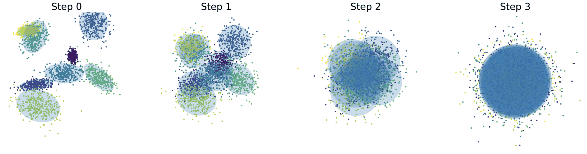
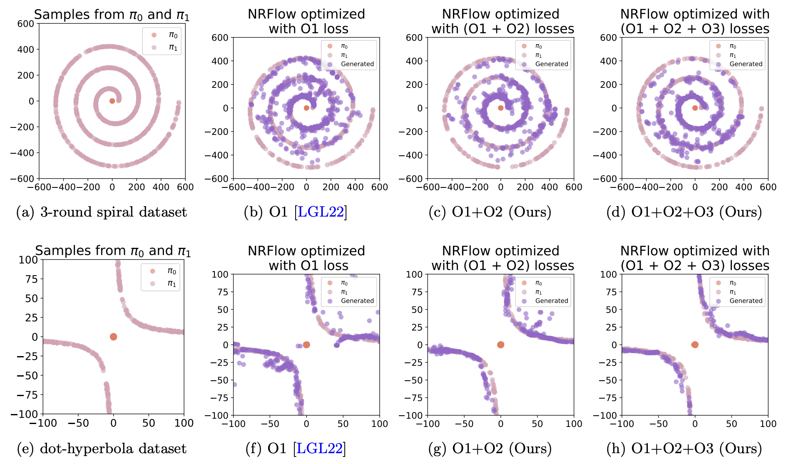
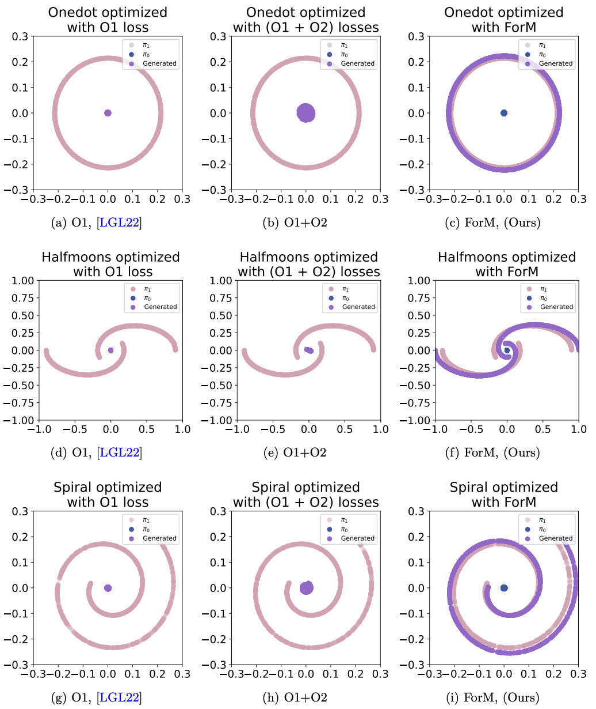

My Passion
I aspire to provide insightful theoretical analysis of machine learning methods and to leverage those theoretical understanding to guide the design and optimization of future techniques.
|
Selected Publications
* denote alphabetical order.
|
|

|
Unraveling the Smoothness Properties of Diffusion Models: A Gaussian Mixture Perspective
Yingyu Liang*, Zhizhou Sha*, Zhenmei Shi*, Zhao Song*, Mingda Wan*, Yufa Zhou*
ICCV 2025
Camera Ready Paper Preview
|
|

|
NRFlow: Towards Noise-Robust Generative Modeling via High-Order Flow Matching
Bo Chen*, Chengyue Gong*, Xiaoyu Li*, Yingyu Liang*, Zhizhou Sha*, Zhenmei Shi*, Zhao Song*, Mingda Wan*, Xugang Ye*
UAI 2025
Openreview link
|
|

|
Force Matching with Relativistic Constraints: A Physics-Inspired Approach to Stable and Efficient Generative Modeling
Yang Cao*, Bo Chen*, Xiaoyu Li*, Yingyu Liang*, Zhizhou Sha*, Zhenmei Shi*, Zhao Song* and Mingda Wan*
CIKM 2025
arXiv link
|
|